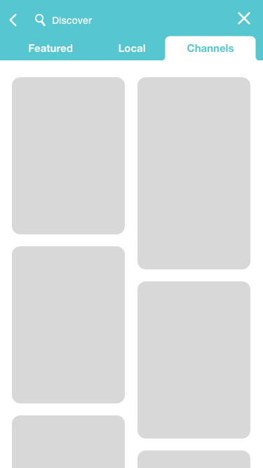
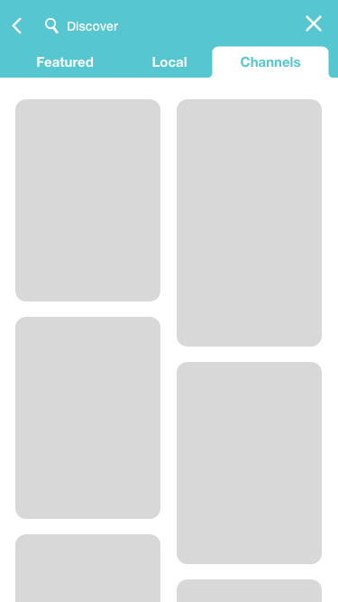

project goals
As a design experiment, I was tasked with redesigning the Snapchat mobile app. The project was completely user research and experience based, as it was intended to create a solution for the poor user experience introduced through a recent update. After conducting interviews and research, I created a prototype of my design and tested it with regular Snapchat users.
 
